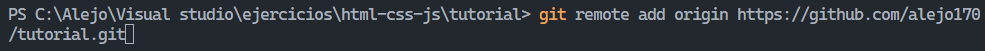
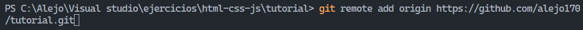

Tutorial
Instalar Git

Primero, asegúrate de tener Git instalado en tu sistema. Puedes descargarlo e instalarlo desde git-scm.com.Aquí debes seleccionar el que corresponda con la arquitectura de tu ordenador.
Una vez descargado, ejecuta el instalador. Se abrirá un asistente de instalación que te guiará a través del proceso. Durante la instalación, se te pedirá que configures algunas opciones, como la ruta de instalación y las opciones del sistema. Puedes aceptar las opciones predeterminadas o personalizarlas según tus preferencias.Una vez completada la instalación haz clic en “Finish” para completar y cerrar el asistente.
Para comprobar que todo se ha instalado correctamente puedes ir al menú inicio y comprobar que la aplicación aparezca allí.
Configurar Git


Configurar Git correctamente es fundamental para un flujo de trabajo eficiente. A través de la configuración, puedes establecer tu identidad como usuario de Git y personalizar varios aspectos de su comportamiento.
La configuración global de Git se aplica a todos los repositorios en tu sistema. Puedes configurar tu nombre de usuario y dirección de correo electrónico con los siguientes comandos: git config --global user.name "Tu Nombre"
y git config --global user.email "tu@email.com"
Es importante utilizar la misma dirección de correo electrónico que la asociada con tu cuenta de GitHub para que tus contribuciones se asocien correctamente con tu perfil.
Crear Repositorio en Github

Primero, asegúrate de estar conectado a tu cuenta de GitHub. Si aún no tienes una cuenta, puedes registrarte de forma gratuita en Github.
Haz clic en tu avatar en la esquina superior derecha de la pantalla para abrir el menú desplegable y selecciona "Your repositories" (Tus repositorios) para ver una lista de todos tus repositorios existentes. Si es tu primera vez en GitHub, esta lista estará vacía.
Una vez en la página de "Your repositories", encontrarás un botón verde en la esquina superior derecha con la etiqueta "New". Haz clic en este botón para iniciar el proceso de creación de un nuevo repositorio.
Se te dirigirá a una página donde deberás ingresar información sobre tu nuevo repositorio. Aquí es donde puedes especificar detalles como el nombre del repositorio, una descripción (opcional), si deseas que el repositorio sea público o privado, y otras opciones como la inicialización de un archivo README, la inclusión de un archivo .gitignore y la elección de una licencia.
Después de completar toda la información requerida, haz clic en el botón verde "Create repository" (Crear repositorio). Esto creará tu nuevo repositorio en GitHub y te dirigirá a la página principal del repositorio recién creado.
Colocamos un nombre, descripcion, seleccionamos como va a ser el repositorio, si es publico o privado y posteriormente pulsamos el boton: Create repository
Conectar con Github
 

Una vez que hayas inicializado un repositorio Git en tu proyecto y estés listo para comenzar a trabajar con archivos, el siguiente paso es agregar los archivos que deseas incluir en el control de versiones. Puedes usar el comando git add para añadir archivos al área de preparación.
Después de agregar los archivos al área de preparación, puedes crear un commit con el comando git
Ahora puedes conectar tu repositorio local con un repositorio remoto en GitHub.
Sube tus cambios al repositorio remoto en GitHub.
Ahora tu código está disponible en GitHub para que tú y otros colaboradores puedan trabajar en él.
Desplegar en Github
Una vez que los archivos de tu sitio web estén en el repositorio, accede a la página principal del repositorio en GitHub. En la barra de navegación superior, haz clic en la pestaña "Settings" (Configuración).
En la sección del ladoizquierdo ve a "Pages" en la página de configuración del repositorio. Aquí es donde puedes activar GitHub Pages y seleccionar la fuente desde la cual se servirá tu sitio web. Para la mayoría de los casos, querrás seleccionar la rama "main".
Después de seleccionar la fuente para GitHub Pages, haz clic en el botón "Save" (Guardar). Esto activará GitHub Pages para tu repositorio y generará una URL donde se alojará tu sitio web.
Esta es la URL del sitio desplegado